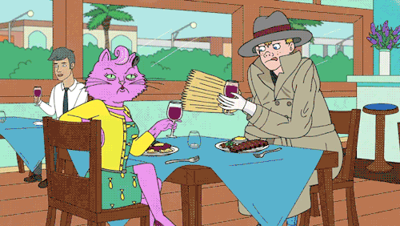
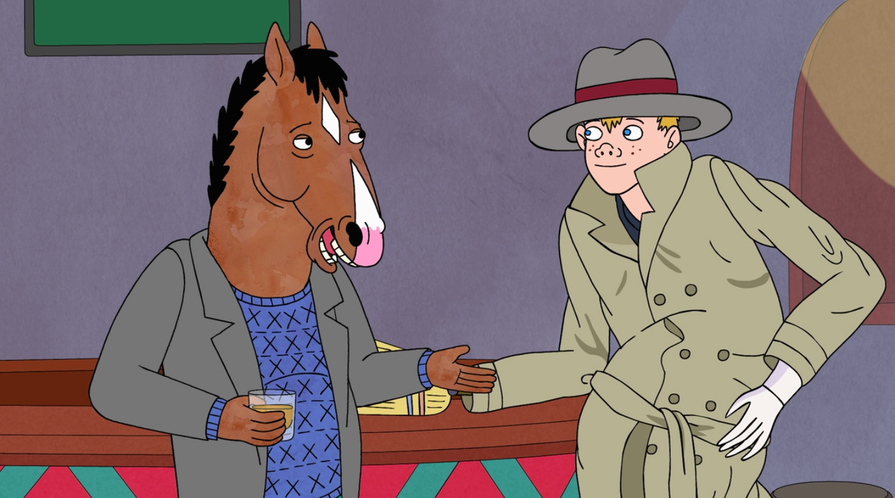
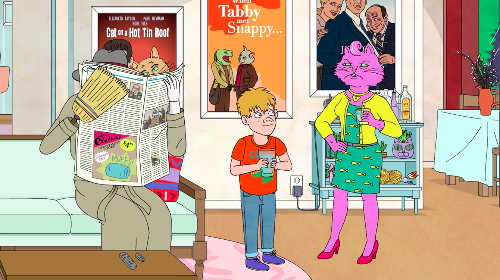

Who is Vincent?
Vincent is an alleged human "adult male," whose face resembles a young boy named Kevin. He is a recurring character throughout Seasons 1 & 2 of BoJack Horseman.
Vincent sampling some fine wine in Bojack Horseman Season 1: Horse Majeure
Vincent's best quotes:
- "Would you like a alcohol?"
- "Don’t be sad...Good horsey."
- "I went to stock market today. I did a business."
- "I like business... transactions."
Vincent's known associates
Vincent has an extensive network of aquaintances. Click the links below to learn more about them:
Is Vincent really who he claims to be?
Vincent introduces himself to Princess Carolyn as Vincent Adultman, and tells her that he "likes business". However, BoJack is not convinced, and instead believes the so-called Vincent is actually just three little boys stacked on top of each other, under a trench coat. This makes Vincent seem nervous.
In the below image from Bojack Season 2: After the Party, we see both Vincent and his alleged son Kevin together in the same room. Is this proof?
